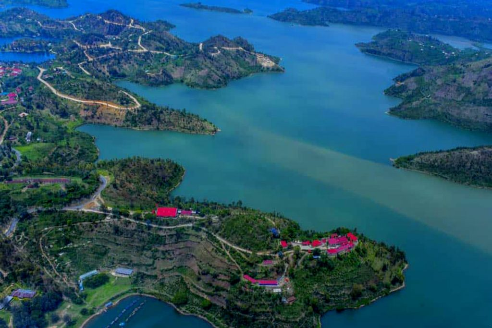

Lake Kivu
Part of the East-African rift valley, it is dotted with beautifull islands and inlets along the shoreline, with charming beach resorts and plenty of opportunity for hiking and cycling.
Lake Kivu lies on the border between the Democratic Republic of the Congo and Rwanda, and is in the Albertine Rift, the western branch of the East African Rift. It is the largest of numerous freshwater lakes that shimmer in the valleys of Rwanda. Three small towns come as welcome retreats in between the sometimes strenuous hikes to find gorillas and chimpanzees in the surrounding Volcanoes and Nyungwe Forest National Parks. Lake Kivu empties into the Ruzizi River, which flows southwards into Lake Tanganyika. Take a boat ride along Lake Kivu to visit nearby islands such as Napoleon island, Mbabara island where coffee and macadamia nuts grows, and the majestic Peace Island where you can swim around and enjoy the peacefulness and beauty of Lake Kivu.